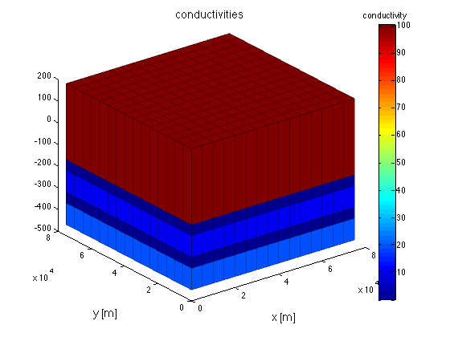
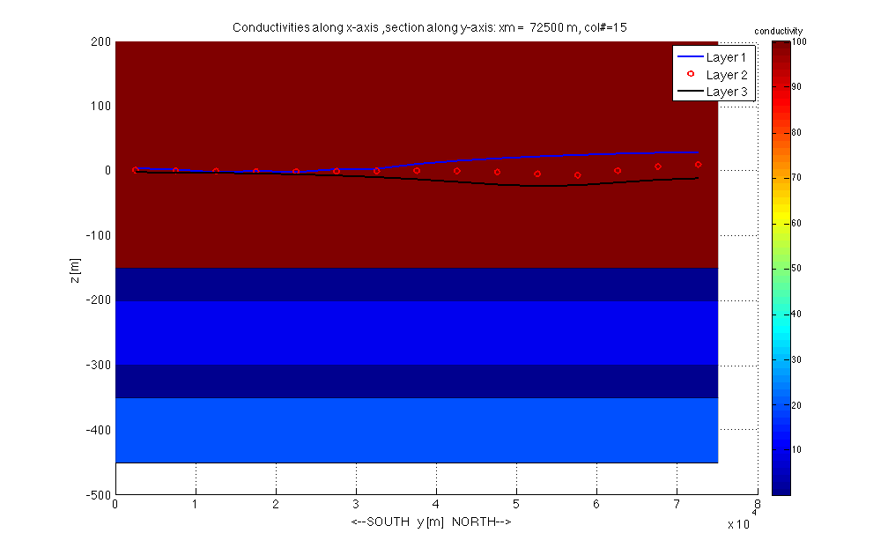
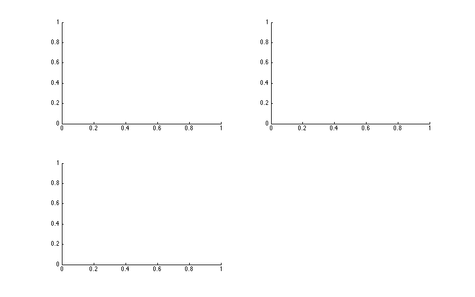
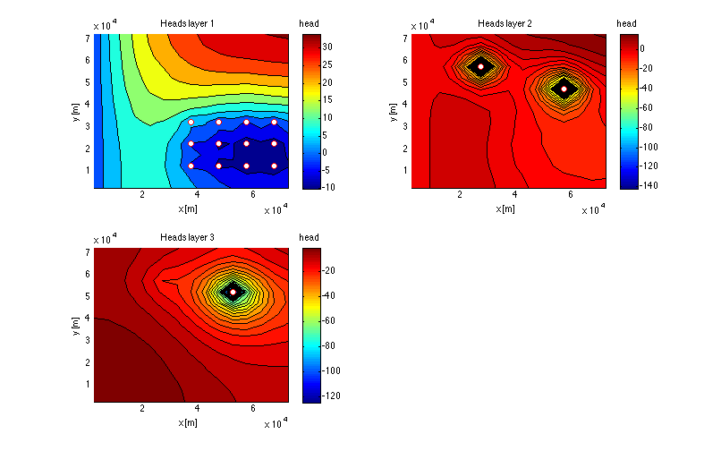

mf_analyze, used to analyze and visualize the output of the model
Contents
- The options and steps will be outlined here
- First step: retrieve the basename of this model
- Get the heads and the budget info.
- Ways to show the data
- Show zoneBudget
- Showing the conductivities in a meshplot
- Show the results usign gridObj/plotMesh
- Plotting conductivities in a cross section along x-axis
- Plotting conductivities in a cross section along y-axis
- Plotting stream function
- Plotting head contours of all layers
- TO 130614
To run it type
% mf_analyze
in Matlab's command window.
The options and steps will be outlined here
Notice that there are many more visualization options. One of them are animations and video's that are generally used in combation with transient flow and with mass transport simulations. Here we only have a steady-steate model.
First step: retrieve the basename of this model
load name % retrieve basename stored in file name.mat load(basename) % get model arrays that were saved by mf_setup
Get the heads and the budget info.
H = readDat([basename '.HDS']); % read computed heads B = readBud([basename '.BGT']); % read ceomputed budgets
Reading MODFLOW binary output file <<generic_steady.HDS>> verbose= 0
Scanning headers
finished, 3 records scanned
File contains the following:
Number of records in file : 3
Number of stress userPeriods: 1
Number of time steps : 1
Number of layers : 3
Number of rows : 15
Number of columns : 15
Maximum time in file " 1
Reading requested data ...
3 records read.
. 1 records in output struct.
Trying to read generic_steady.BGT as BINARY file...it works!
Scanning 7 headers
finished, 7 records scanned
File contains the following:
Number of records in file: 7
Number of stress periods : 1
Number of time steps : 1
Number of layers : 3
Number of Rows : 15
Number of columns : 15
Number of unique labels : 7
CONSTANTHEAD
DRAINS
FLOWFRONTFACE
FLOWLOWERFACE
FLOWRIGHTFACE
RECHARGE
WELLS
Reading the requested data ...
Please wait while I'm getting the requested data ...
....... 1 records in output struct.
Ways to show the data
Show zoneBudget
generate a 3D zone array with zones 1, 2 and 3 corresponding to layers 1, 2, and 3. Then request the zoneBudget
zoneArray = gr.const([1 2 3]); % generate the zoneArray zonebudget(B,zoneArray,1); % request zonebudget for layer 1 zonebudget(B,zoneArray,2); % same for layer 2 zonebudget(B,zoneArray,3); % same for layer 3 zonebudget(B,zoneArray,[1 2 3]); % same for all layers combined % Notice: If B constains data more than one time, specify which time like this % zonebudget(B ,zoneArray,[1 2 3]); % works if only one time contained in B % zonebudget(B( 1),zoneArray,[1,2,3]); % same if only one time % zonebudget(B(end),zoneArray,[1 2 3]); % same if only one time % zonebudget(B(it) ,zoneArray,[1 2 3]); % general, select time it
============================================
zoneBudget will be computed for zones: 1
Budget [consistent model units] for period=1, itsp=1:
BUDGET FOR ZONE 1 -----IN----- ----OUT-----
total for CONSTANTHEAD = 0.00 2963132.48
total for FLOWRIGHTFACE = 0.00 -0.00
total for FLOWFRONTFACE = 0.00 -0.00
total for FLOWLOWERFACE = 7759.30 1538739.99
total for WELLS = 0.00 6000000.00
total for DRAINS = 0.00 5886.82
total for RECHARGE = 10500000.00 -0.00
------------ ------------
total for ZONE 1 = 10507759.30 10507759.29
total net ZONE 1 = 0.01
============================================
zoneBudget will be computed for zones: 2
Budget [consistent model units] for period=1, itsp=1:
BUDGET FOR ZONE 2 -----IN----- ----OUT-----
total for CONSTANTHEAD = 0.00 30980.70
total for FLOWRIGHTFACE = 0.00 -0.00
total for FLOWFRONTFACE = 0.00 -0.00
total for FLOWLOWERFACE = 1611285.29 580304.60
total for WELLS = 0.00 1000000.00
total for DRAINS = 0.00 -0.00
total for RECHARGE = 0.00 -0.00
------------ ------------
total for ZONE 2 = 1611285.29 1611285.30
total net ZONE 2 = -0.01
============================================
zoneBudget will be computed for zones: 3
Budget [consistent model units] for period=1, itsp=1:
BUDGET FOR ZONE 3 -----IN----- ----OUT-----
total for CONSTANTHEAD = 0.00 -0.00
total for FLOWRIGHTFACE = 0.00 -0.00
total for FLOWFRONTFACE = 0.00 -0.00
total for FLOWLOWERFACE = 572545.30 72545.30
total for WELLS = 0.00 500000.00
total for DRAINS = 0.00 -0.00
total for RECHARGE = 0.00 -0.00
------------ ------------
total for ZONE 3 = 572545.30 572545.30
total net ZONE 3 = -0.00
============================================
zoneBudget will be computed for zones: 1 2 3
Budget [consistent model units] for period=1, itsp=1:
BUDGET FOR ZONE 1 2 3 -----IN----- ----OUT-----
total for CONSTANTHEAD = 0.00 2994113.18
total for FLOWRIGHTFACE = 0.00 -0.00
total for FLOWFRONTFACE = 0.00 -0.00
total for FLOWLOWERFACE = 0.00 -0.00
total for WELLS = 0.00 7500000.00
total for DRAINS = 0.00 5886.82
total for RECHARGE = 10500000.00 -0.00
------------ ------------
total for ZONE 1 2 3 = 10500000.00 10500000.00
total net ZONE 1 2 3 = -0.00
Showing the conductivities in a meshplot
gr.plotMesh (method plotMesh of gridObj gr) can be used to show in 3D properties such as the hydraulic conducvitiy.
In this case we have a 3Layer model with layers 1 and 2 having a confining bed at their belly/bottom. The conductivities of the 3 cell layers are in the 3D array HK and the vertical conductivities of the confining beds are in the 3D array VKCB. We can show only the HK layers or the VKCB layers but them some layers will be left open. We can also merge them to get conductivity values for all the layers and show this combination.
var = NaN(gr.Ny,gr.Nx,gr.Nz); % generate a 3D array with sufficient layers to % to hold layers and confining beds var(:,:,gr.ITlay) = HK; % Put the horizontal k in the right layers var(:,:,gr.ITcbd) = VKCB; % Put the vertial k of the confining beds at their place
Show the results usign gridObj/plotMesh
figure; ax(1) = axes('nextplot','add'); % generate a figure and an axis h = gr.plotMesh(ax(1),var,'title','conductivities','fontsize',14); view(3); % show mesh % add a colorbar to link colors to conductivity values hb = colorbar; set(get(hb,'title'),'string','conductivity');
Plotting conductivities in a cross section along x-axis
This is done using the method plotXSec of the gridObj
gr.plotXSec(1,'figure','xsec','title','Conductivities along y-axis','fontsize',14,'all','lay',HK,'cbd',VKCB); hb = colorbar; set(get(hb,'title'),'string','conductivity'); % Plot the heads along row iy onto this XSection iy = 8; h(1) = plot(gr.xm,XS(H(end).values(iy,:,1)),'b','linewidth',2); % head in layer 1 h(2) = plot(gr.xm,XS(H(end).values(iy,:,2)),'r','linewidth',2); % head in layer 2 h(3) = plot(gr.xm,XS(H(end).values(iy,:,3)),'k','linewidth',2); % head in layer 3 legend(h,'Layer 1','Layer 2','Layer 3'); % legend, using the handles to the 3 lines
Conductivities along y-axis ,section along x-axis: ym = 72500, row=1
Plotting conductivities in a cross section along y-axis
This is done using method plotYsec instead of plotXsec of the gridObj
gr.plotYSec(1,'figure','ysec','title','Conductivities along x-axis','fontsize',14,'all','lay',HK,'cbd',VKCB); hb = colorbar; set(get(hb,'title'),'string','conductivity'); % plot the heads onto this XSec along column ix ix = 8; h(1) = plot(gr.ym,YS(H(end).values(:,ix,1)),'b','linewidth',2); % layer 1 h(2) = plot(gr.ym,YS(H(end).values(:,ix,2)),'ro','linewidth',2); % layer 2 h(3) = plot(gr.ym,YS(H(end).values(:,ix,3)),'k','linewidth',2); % layer 3 legend(h,'Layer 1','Layer 2','Layer 3'); % legend using the handles to the 3 lines
Conductivities along x-axis ,section along y-axis: xm = 72500, column=15 fontsize ,section along y-axis: xm = 14, column=
Plotting stream function
The figure is 3D so the stream function cannot be shown
Plotting head contours of all layers
figure('name','contours of heads','position',screenPos(0.6)); % fig = 60% of screen ax(1) = subplot(2,2,1,'nextplot','add'); % axis to plot layer 1 ax(2) = subplot(2,2,2,'nextplot','add'); % axis to plot layer 2 ax(3) = subplot(2,2,3,'nextplot','add'); % axis tt plot layer 3 hrange = ContourRange(H,50); % get a useful set of contour elevations
Plot the contours for the three layers
for ia=1:3 xlabel(ax(ia),'x [m]'); ylabel(ax(ia),'y [m]'); % axis labels title(ax(ia),sprintf('Heads layer %d',ia)); % title h = colorbar('peer',ax(ia)); title(h,'head'); % colorbar for heads contourf(ax(ia),gr.xm,gr.ym,H(end).values(:,:,ia),hrange); % contours % plot well locations of wells pertaining to each of the layers % plotting is done using method plotXY of wellObj % selection of wells is done using [well.iLay]==ia well([well.iLay]==ia).plotXY(ax(ia),'marker','o','markerEdgeColor','r'); end